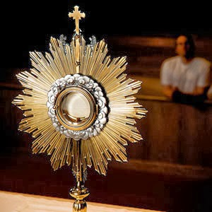
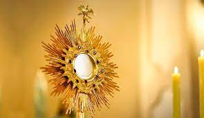
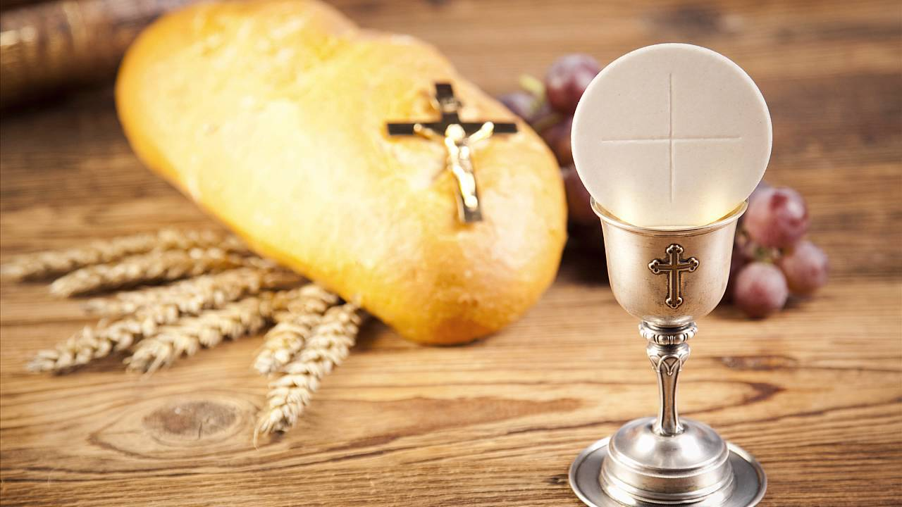

HORARIO DE OFICINA
Lunes a Viernes de (10:00 am - 13:00 pm) y (5:00 pm - 8:00 pm)
Sabados de (10:00 am - 13:00 pm)
MISAS
LUNES - SABADOS 8:00 am y 8:00 pm
Domingos 8:00 am, 10:00 am, 12:00pm, 7:00 pm, 8:00 pm
RESO DEL ROSARIO
Lunes a las 7:00 pm

ADORACION AL SANTISIMO
Jueves de 9:00 am a 8:00 pm
Viernes priemero 8:30 pm
CONFESIONES
En cada misa y diario de 6:00 pm a 8:00 pm
ADORACION NOCTURNA
Primer sabado del mes para las Mujeres
Tercer sabado del mes para los Hombres

PROCESION CON EL SANTISIMO
Viernes primero de cada mes
CONFESIONES Y COMUNIONES
A ENFERMOS
El servicio se debera requerir en la notaria
BENDICIONES DE CASA
El servicio se debera requerir en la notaria
CATECISMO PARA NINOS
(Apartir de los 4 anos) Sabados 9:45 am
Da click en los centros para ver ubicacion
Centros de catequesis
Templo(San Rafael Arcangel)
Nuestra Sr. de Guadalupe (Geovillas la Arbolada Plus)
San Jose (San Jose Residencial)
Nuestra Sr. de Fatima (Parque valle de Santa Ines )
San Francisco de Asis(Parque de la Arboleda)
Santa Maria de Guadalupe (Capilla Frc. el Paraiso)
Nuestra Sr. de Guadalupe (Fraccionamiento XIII)

PLATICAS PRE-SACRAMENTALES
2da y 4ta Semana de cada mes
(Lunes, Martes, y Miercoles de 8:00pm a 9:00 pm)
Ultimo domingo de cada mes de 9:00 am a 12:00 pm
PLATICAS PRE-MATRIMONIALES
Cada 3ero y 4to Domingo del mes de 10:00 am a 13:00 pm hrs.